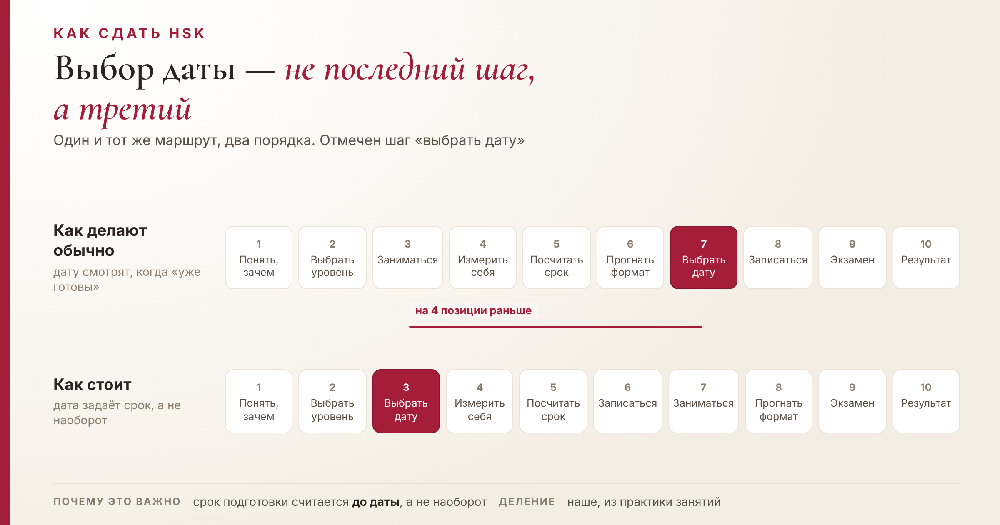
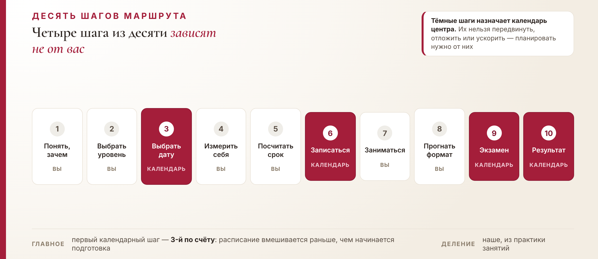

Экзамен
Как сдать HSK: десять шагов по порядку и четыре, которые зависят не от вас


Эта страница — не разбор экзамена, а маршрут. От решения сдавать до сертификата десять шагов, и 4 из них зависят не от вас, а от календаря центра. Каждый шаг разобран у нас подробно, и ссылки стоят прямо в таблице.
Главное, что стоит знать до всего остального: первый календарный шаг — 3 по счёту. То есть расписание вмешивается в ваш план раньше, чем начинается сама подготовка.
Короткий ответ: десять шагов, и четыре из них не ваши
Порядок такой: понять, что подтверждает сертификат → выбрать уровень → выбрать дату сессии → измерить стартовую точку → посчитать срок → записаться → заниматься → прогнать формат по времени → прийти на экзамен → получить результат.
6 шагов зависят только от вас. Их можно начать в любой день и двигать как угодно: читать, считать, заниматься, прогонять задания.
4 шага зависят от календаря центра. Дату сессии назначаете не вы, окно записи закрывается без вашего участия, экзамен идёт в назначенный день, результат объявляют тогда, когда объявят.
Отсюда правило, которое я считаю главным в этой статье: сначала выясните то, что от вас не зависит, и только потом стройте план внутри этих рамок. Обратный порядок — самая частая причина сорванной подготовки.
Оговорюсь сразу: деление на десять шагов — наше. Это не чей-то стандарт и не официальная процедура, а то, как я выстраиваю работу с учениками.
И ещё одно, про сам список. Шаги не равны по длине: седьмой занимает месяцы, а третий — полчаса. Но по важности они равны, потому что пропущенный получасовой шаг обесценивает все месяцы.
Десять шагов по порядку
В правом столбце — наш разбор каждого шага. Там, где ссылки нет, страница ещё не опубликована: как только адрес появится, поставлю.
Читать таблицу стоит сверху вниз один раз, а потом вернуться к третьей строке. Именно она определяет, сколько времени у вас на все остальные.
| № | Шаг | Зависит | Когда | Подробно |
|---|---|---|---|---|
| 1 | Понять, что подтверждает сертификат | от вас | до всего остального | что подтверждает сертификат |
| 2 | Выбрать уровень | от вас | до всего остального | — |
| 3 | Выбрать дату сессии | от календаря центра | сразу после выбора уровня | расписание сессий |
| 4 | Измерить стартовую точку | от вас | до расчёта срока | пробный тест |
| 5 | Посчитать срок и дневную норму | от вас | после измерения | сроки с нуля |
| 6 | Записаться до закрытия окна | от календаря центра | раньше, чем кажется нужным | — |
| 7 | Заниматься по плану | от вас | всё время между решением и экзаменом | как устроить занятия |
| 8 | Прогнать формат по времени | от вас | в последний месяц | — |
| 9 | Прийти на экзамен | от календаря центра | в назначенный день | день экзамена |
| 10 | Получить результат | от календаря центра | когда объявит центр | как считается результат |
Строки, отмеченные цветом, — календарные. Их нельзя передвинуть, отложить или ускорить, и планировать нужно от них.
Про шаг «выбрать уровень» скажу отдельно: он здесь только назван. Как устроена шкала, что на каждом уровне и какой подходит под какую задачу — это отдельный разбор, и пересказывать его здесь я не буду.
То же касается остальных шагов: эта страница отвечает на вопрос «в каком порядке», а не «как именно». Каждое «как именно» у нас разобрано отдельно и обычно подробнее, чем помещается в одну строку таблицы.

Два шага маршрута стоит пояснить, потому что их чаще всего понимают иначе. Измерение стартовой точки — это не «посмотреть задания», а полный прогон по времени и без подсказок. Прогон формата в конце — это не повторение материала, а тренировка темпа и порядка действий.
Разница между ними в том, что проверяется. В начале — сколько вы знаете. В конце — успеете ли вы это показать за отведённое время.
Почему дату выбирают последней, а надо третьей
В маршруте выбор даты стоит 3 шагом. В том порядке, в котором это делают на практике, он оказывается 7 — то есть уезжает на 4 позиции.
Логика смещения понятна и даже разумна на вид. Человек рассуждает так: сначала подготовлюсь, потом посмотрю, когда ближайший экзамен, и запишусь. Дата кажется формальностью, которую можно оставить на потом.
А дальше происходит одно из двух. Либо ближайшая сессия оказывается слишком близко и запись на неё уже закрыта, либо она слишком далеко, и приходится несколько месяцев держать форму без цели.
Второе хуже первого, хотя выглядит безобиднее. Подготовка без даты держится у единиц: без срока нет ни дневной нормы, ни понятного конца.
Поэтому дату я прошу выбирать третьей, сразу после уровня, и ещё до того, как считать срок. Срок считается до даты, а не наоборот — иначе получается деление на неизвестное.
Расписание сессий и то, как выбрать свою дату, разобрано у нас здесь: даты сдачи HSK и расписание сессий. Там же видно, что окно записи закрывается заметно раньше самого экзамена.
В обычном порядке есть и вторая перестановка, помельче, но тоже дорогая: занятия начинают раньше, чем измеряют стартовую точку. План в итоге считается от уровня, которого нет.
Разговор о подготовке почти всегда начинается одинаково: «хочу сдать HSK, с чего начать». И почти всегда человек ждёт, что я назову учебник.
Я называю не учебник, а два числа: день экзамена и последний день записи. Пока их нет, любой план висит в воздухе.
Возражение всегда одно: «я же ещё не готов, зачем мне дата». Но дата — не награда за готовность, а рамка, внутри которой готовность считается.
Без неё получается так: человек занимается полгода, потом идёт смотреть расписание и обнаруживает, что ближайшая сессия через неделю, а следующая через четыре месяца.
И то и другое плохо. В первом случае он идёт неподготовленным, во втором — четыре месяца держит форму без цели, а это мало кто выдерживает.
Поэтому я прошу выбрать дату раньше, чем мы откроем учебник. Иногда выясняется, что подходящей даты в этом полугодии нет, — и это тоже результат, он меняет весь план.
Второе, о чём прошу, — прогон. Не «посмотреть задания», а полный тест по времени. Он занимает час и заменяет три разговора о том, какой у человека уровень.
Вывод, который я делаю: подготовка начинается не с учебника, а с календаря и с измерения. Всё остальное считается уже от этих двух точек.
Шаги, которые зависят не от вас
Эти 4 строки стоит выписать отдельно и посмотреть на них до того, как открывать учебник.
| Шаг | Когда | Чем кончается |
|---|---|---|
| 3. Выбрать дату сессии | сразу после выбора уровня | двумя датами в календаре: экзамена и закрытия записи |
| 6. Записаться до закрытия окна | раньше, чем кажется нужным | местом на сессии |
| 9. Прийти на экзамен | в назначенный день | сданной работой |
| 10. Получить результат | когда объявит центр | баллами и, если порог взят, сертификатом |
Первый из них — третий по счёту, и это самое важное число в статье. Календарь вмешивается раньше, чем вы успеваете втянуться в занятия, и чем позже вы на него посмотрите, тем меньше у вас останется вариантов.
Про запись скажу коротко, потому что подробно это разобрано отдельно: она закрывается заметно раньше дня экзамена, и «успею записаться» — самая дорогая иллюзия в этом списке.
Про день экзамена и про то, где теряют баллы на формате, а не на языке, у нас есть отдельный разбор: как проходит день экзамена. А как считается результат и сколько нужно набрать — здесь: система оценки HSK 4.
Сроки объявления результатов я не называю: у центров они свои, и выдумывать общее число для справочной статьи нельзя. Узнать свой срок можно там же, где записывались.
Куда идти дальше по своему уровню
Маршрут одинаков для всех уровней, а содержание шагов — нет. Вот куда смотреть дальше.
| Уровень | Чем отличается | Разбор |
|---|---|---|
| HSK 1 | первый уровень, где над знаками есть пиньинь, а письма от руки нет | HSK 1: как сдать первый уровень |
| HSK 2 | тот же формат, но заданий больше и времени на них меньше | HSK 2: сдаём второй уровень |
| HSK 3 | пиньинь исчезает, появляется письменная часть | HSK 3: как сдать без пиньиня |
| HSK 4 | уровень, который чаще всего просят вузы и работодатели | HSK 4 в 2026: разбор экзамена |
| HSK 5 | длинные тексты и близкие по смыслу слова | HSK 5: как сдать «университетский» экзамен |
Сколько слов и знаков требует каждая ступень, разобрано отдельно: требования к количеству слов и знаков. А если нужен устный экзамен, он сдаётся отдельно от письменного: HSKK: как подготовиться к устному экзамену.
О самостоятельной подготовке чаще всего спрашивают применительно к четвёртому уровню. Материал для неё доступен почти весь, а вот проверку письменной части сам себе не устроишь: свою работу оценить изнутри нельзя. Из чего складывается самостоятельное занятие, смотрите здесь: как изучить китайский самостоятельно, а начало с нуля — здесь: изучение китайского с нуля: с чего начать.
Как читается HSK и откуда «чискей»
Вопрос выглядит мелким, но его задают постоянно, а ответа на него у нас до сих пор не было.
Полное название экзамена — 汉语水平考试, в чтении ханьюй шуйпин каоши. Переводится как «экзамен на уровень владения китайским языком». Три латинские буквы — это сокращение от этого названия по первым звукам слогов.
Отсюда и чтение: по буквам, эйч-эс-кей, как читают любое латинское сокращение. Варианты, которые встречаются в запросах:
- эйч-эс-кей — по буквам, как любое латинское сокращение. Так и читают.
- хаэска — попытка прочитать три буквы слитно, как одно слово.
- чискей — смесь английского чтения букв и русского окончания.
- хэ-эс-ка — чтение по русским названиям букв.
Ошибкой я бы ни один из них не назвала — так говорят, и собеседник понимает. Но если вы пишете письмо в центр или рассказываете о сертификате работодателю, надёжнее читать по буквам.
И ещё одно написание, которое встречается часто: «хск», без гласных. Это просто калька с латинского сокращения, записанная кириллицей, и ничего отдельного она не означает.
Частые ошибки в порядке шагов
- Начинать с учебника, а не с календаря. Пока нет даты, нет и срока, а значит, нет и плана.
- Считать срок до неизвестной даты. Это деление на неизвестное: получается число, которое ничего не значит.
- Заниматься до измерения стартовой точки. План в итоге считается от уровня, которого нет.
- Оставлять прогон формата на последнюю неделю. Привычка к темпу набирается не за один раз.
- Думать, что записаться можно в любой момент до экзамена. Нельзя: окно закрывается заметно раньше.
Чего в статье нет намеренно
- Разбора уровней и шкалы. Что на каждом уровне и какой выбрать — отдельная тема, здесь шаг только назван.
- Структуры экзамена и того, что меняется с 13 декабря 2026 года. Тоже отдельный разбор.
- Дня экзамена по шагам. Он разобран целиком в своей статье.
- Проходных баллов и подсчёта результата. Там своя арифметика.
- Требований 2027 года. Таких данных у меня нет, а называть их наугад в справочной статье нельзя.
И ещё об одном умолчании. Я не называю сроков объявления результатов и не обещаю, что маршрут из десяти шагов подойдёт всем: кому-то хватит пяти, а кому-то понадобится повторить третий и четвёртый по два раза. Порядок важнее числа шагов.
Частые вопросы (FAQ)
Как сдать HSK, если я только начинаю?
По порядку из десяти шагов: понять, что подтверждает сертификат, выбрать уровень, выбрать дату сессии, измерить стартовую точку прогоном, посчитать срок, записаться, заниматься, прогнать формат по времени, прийти на экзамен и получить результат. Четыре шага из этих десяти зависят не от вас, а от календаря центра.
Как читается HSK?
По буквам: эйч-эс-кей. Это латинское сокращение, и читают его как латинское. В запросах встречаются «чискей», «хаэска» и «хск» — так аббревиатуру пытаются прочитать слитно или по русским названиям букв. Полное название экзамена — 汉语水平考试, в чтении ханьюй шуйпин каоши, то есть экзамен на уровень владения китайским языком.
С какого шага начинать, если дата экзамена уже выбрана?
С измерения. Прогоните полный тест того уровня, который считаете своим, по времени и без подсказок, и дальше считайте срок от результата. Выбранная дата при этом становится не целью, а ограничением: она показывает, сколько у вас дней.
Как сдать HSK 1 с нуля?
Тем же маршрутом, только на первом уровне он короче: над знаками есть пиньинь, письма от руки нет, все задания с выбором ответа. Разбор самого уровня у нас отдельный, ссылка стоит в тексте.
Можно ли подготовиться к HSK 4 самостоятельно?
Материал для этого доступен почти весь, а вот проверка письменной части сама себя не сделает: свою работу оценить изнутри нельзя. Поэтому самостоятельная подготовка к четвёртому уровню обычно упирается не в нехватку материала, а в отсутствие обратной связи.
Что нужно, чтобы сдать HSK 1 в 2027 году?
Про 2027 год я ничего утверждать не буду: таких данных у меня нет, а называть требования наугад в справочной статье нельзя. Ближайшее достоверное изменение — то, что происходит с 13 декабря 2026 года, и оно разобрано у нас отдельно.
И напоследок то, ради чего эта страница собрана. Подготовка к экзамену разваливается не от нехватки материала — материала в избытке, и почти весь он доступен. Она разваливается от порядка: когда то, что от вас не зависит, выясняется последним. Выпишите четыре календарных шага, поставьте их в календарь, и дальше всё остальное встанет на место само. А если собирать маршрут удобнее не в одиночку — запишитесь на бесплатный урок, разберём ваш случай по этим же шагам.
Источники
- Деление маршрута на десять шагов и на шесть «ваших» и четыре календарных — наше, из практики занятий; это не официальная процедура и не чей-то стандарт.
- Числа посчитаны по самому списку шагов: сколько из них календарных, каким по счёту стоит первый из них и на сколько позиций в обычном порядке уезжает выбор даты.
- «Обычный порядок», с которым сравнивается маршрут, — наблюдение из занятий, а не измеренная статистика; об этом сказано в тексте.
- Содержание каждого шага не пересказывается: уровни, структура экзамена, день экзамена, запись, сроки подготовки и подсчёт баллов разобраны в отдельных статьях, ссылки стоят в таблицах.
- Полное название экзамена — 汉语水平考试, в чтении ханьюй шуйпин каоши, то есть «экзамен на уровень владения китайским языком»; латинское сокращение читается по буквам.
- Требований 2027 года не называю: таких данных у меня нет.
- Сроков объявления результатов не называю: у центров они свои.